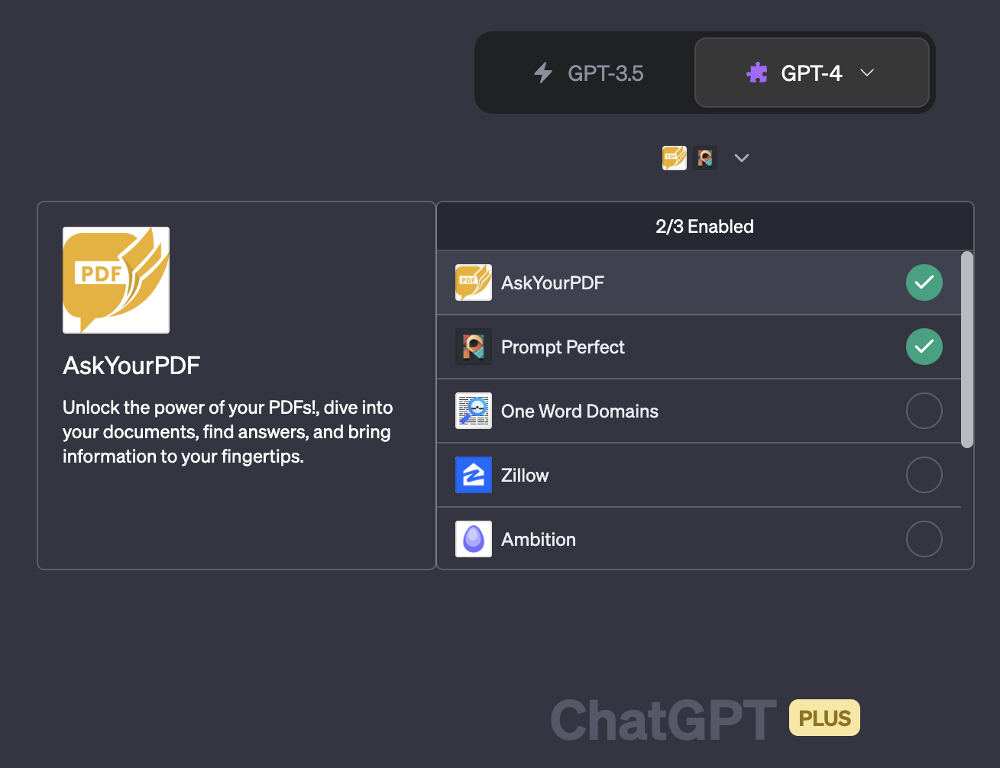
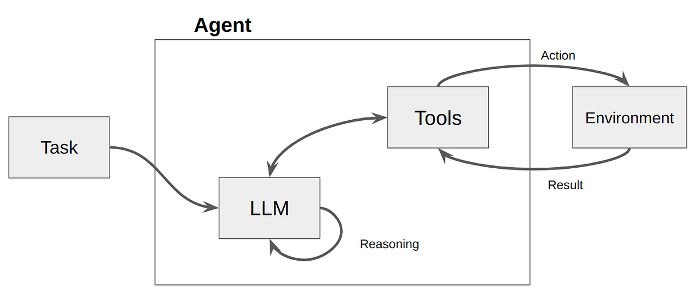
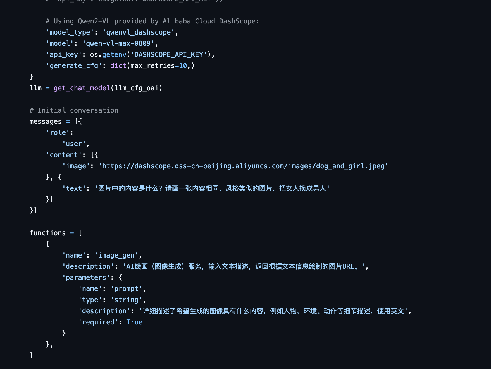
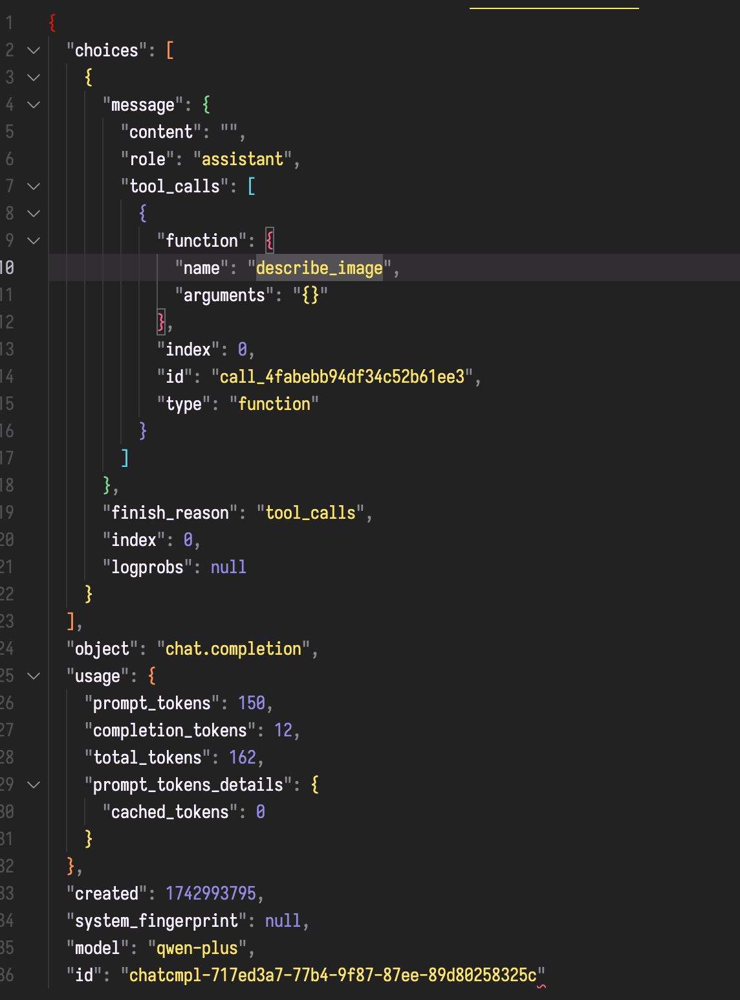
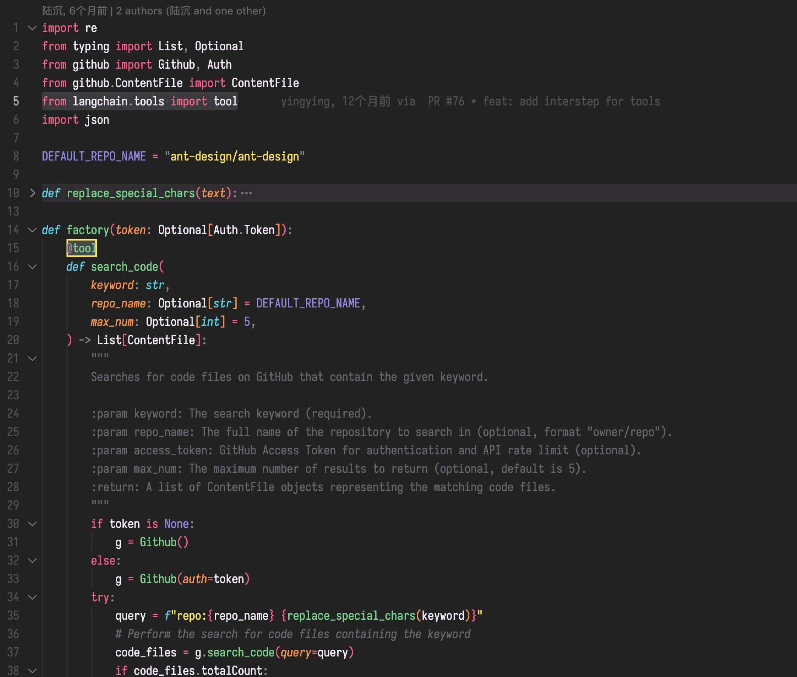
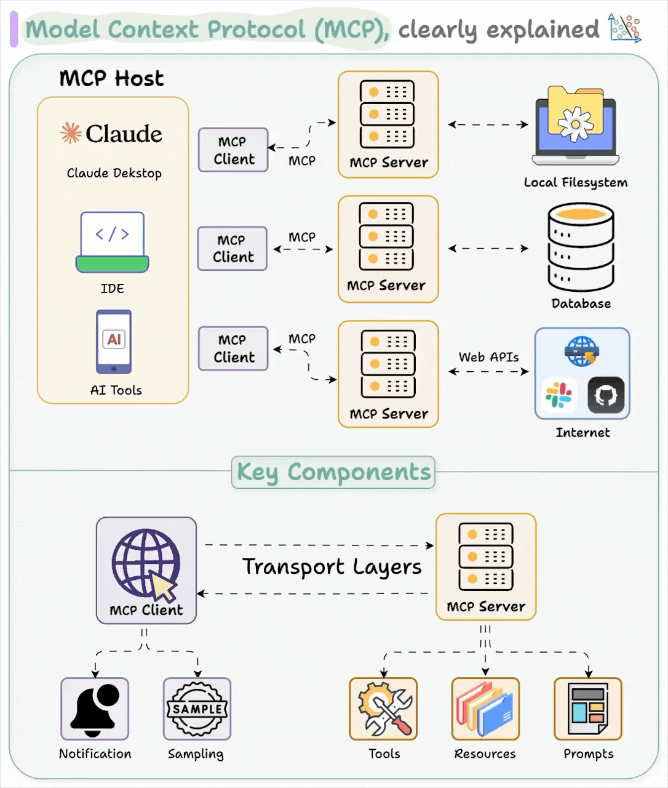
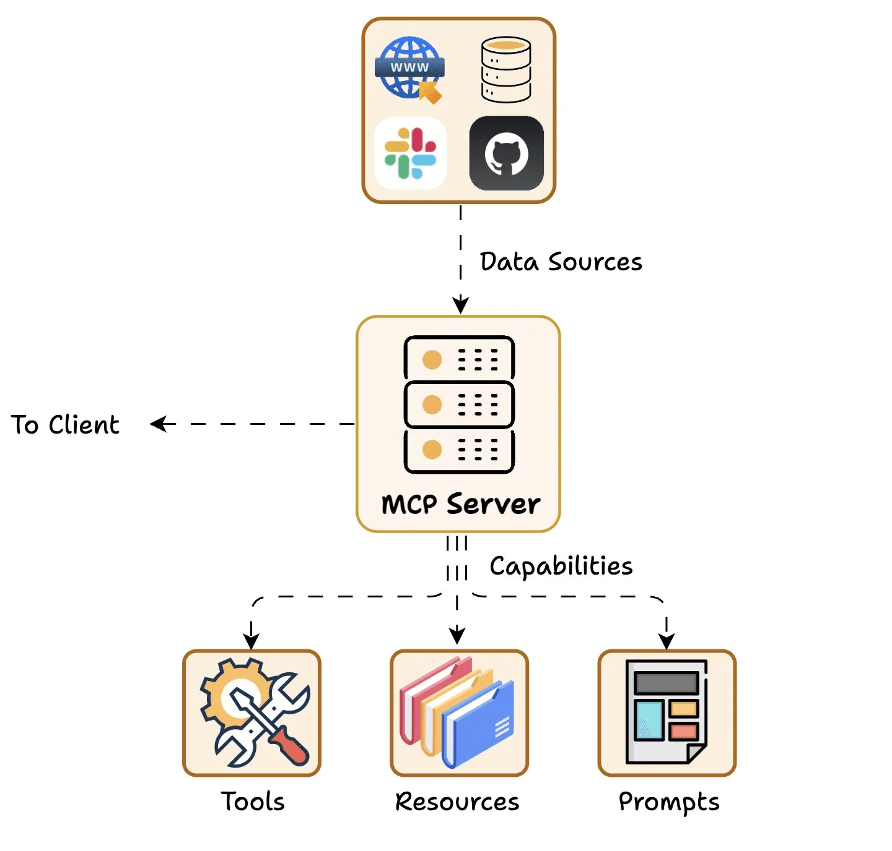
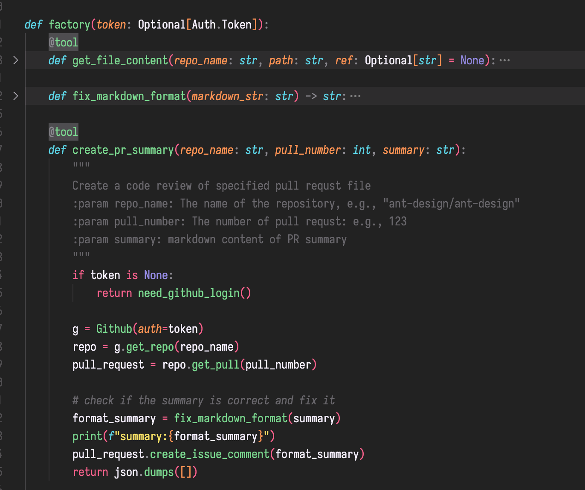

Yet even the most sophisticated models are constrained by their isolation from data—trapped behind information silos and legacy systems.
再牛逼的模型，都会囿于信息孤岛与老旧系统的藩篱。
-- Introducing the Model Context Protocol \ Anthropic
当下，大模型已经很牛逼了。但是有一点必须承认：无论是多牛逼的大模型，都没办法打破信息屏障。原因在于：
- 无论多牛逼的大模型，都没有办法给出超出它训练集范畴的信息，或者执行除了文本输出之外的操作。
- 大模型是无状态、无记忆的。输入端的一切努力都是在有限的上下文窗口里更有效率的塞东西。
这也是 AI Agent 的大问题。做题做得再好。如果没有办法和现实世界的业务系统和数据集成，那其实很难受。MCP 通过定义 ?如何将现有数据源?（文件系统、数据库、API 等）连接到 AI 工作流中，解决了这一问题。
还是那个暴论。如果大模型应用只能用来陪聊。其实没啥意思。用一下就厌了。
（如果某个大模型应用连陪聊都不行，那很显然更没意思）
在 MCP 出现之前是怎么做的
- RAG 和向量数据库：这个大家都知道了。就是调用大模型之前，先把问题拿去向量数据库里检索一下，把匹配到的 Top N 结果放到大模型上下文中。这个显然是前 Agent 时代的做法。现在可以把向量数据库工具化。让 Agent 在生成结果的时候自主调用向量数据库。但是这个仍然是 RAG 的范畴。
- 大模型插件。典型的就是 GPT-4 的插件。这个是 OpenAI 提出的插件规范。当时 OpenAI 还计划搞市场。众所周知，这家公司现在叫 CloseAI。所以这个协议是私有的。

- Function Call / Tool Use：
包括 DeepSeek Chat/V3 在内的绝大部分主流大模型提供了function call的 API，可以让大模型通过调用 function call 来获取信息，或者调用外部工具。比如下面这个对 qwen-plus 的调用，就声明了一个describe_image的 tool。在调用大模型后，会接收一个结构化的返回。根据这个结构化的返回调用本地的相关工具，把信息再吐给大模型。



像 Langchain 就把这个功能集成到框架中了。https://python.langchain.com/v0.1/docs/modules/tools/
这样开发者就可以在 Python 里用装饰器 @tool，来定义一个 tool 的用途和入参。Langchain 会把注释里的 description 和 params 翻译成 API 调用的参数，并根据大模型返回，调用本地实现的 tool 函数。

到这里会发现一个问题。使用这种方式构建的 Agent，和 tool 体系，是一个封闭系统。还是拿 Petercat 举例，现在 Petercat 通过 @tool 实现了 GitHub 代码搜索。如果想要给它增加一个「 AntCode 的代码搜索」的功能，必须由 Agent 开发者在 Agent 内部定义并实现一个 「搜 AntCode 代码」的 Tool。
MCP 是什么
MCP 其实是一个标准和协议。它提供了一个通用的开放标准，用于将 AI 系统与数据源连接起来，用单一协议取代碎片化的集成。结果是一种更简单、更可靠的方法，使 AI 系统能够访问所需的数据（和工具）。
在我看来，MCP 有两个最大的价值：
- Agent 应用通过接入 MCP 把自己变成开放系统：
- 一方面得以让外部信息进来，拥抱了无限多的信息源。
- 另一方面可以让原先物理上隔离的各种服务进到大模型的上下文里。
- 关注点分离。MCP 体系中的功能提供方和 Agent 应用维护者的关注点分离：
- 服务提供者只需要按 MCP 协议暴露服务即可。
- Agent 应用只需要知道它能够按协议访问哪些服务即可。


这个图比官方的架构图好。MCP 架构中的 MCP Host 跟 MCP Client 是两回事。必须严格区分。否则容易搞混。
MCP 架构中的几个重要角色：
- MCP Host：想要通过 MCP 协议访问数据、工具的应用程序。通过内部集成 MCP Client 来访问 MCP。应用中的 AI 部分在这。跟 MCP 协议无关。
- MCP Client：与服务器 1:1 连接的 MCP 协议客户端。仅有连接功能。
- MCP Server：很薄的仅用来按协议公开功能的服务。
MCP 跟雨燕有啥关系
从「下场做 Agent」变成「提供 MCP 服务」，把蚂蚁前端基建通过 MCP 协议暴露，让别人做 Agent。
过去几年大家一直在想做「ChatOps」、「雨燕小助手」。会发现无论是产品形态还是使用体验，都需要花很大精力去打磨。并且载体和阵地也比较奇怪🤔。最近像 cursor 也比较火。像雨燕的选择可能是让自己融入 AI 编程工具，而不是自己再做一个入口。可能会比较好。
另外是考虑服务规模化后的倍增效应。多年前有个烂梗：
什么是 Dev Infra：用户自己去平台上点一下部署，
什么是 AI Dev Infra：「用户跟大模型说，帮我去平台上点一下部署」。
那如果研发工作中的所有 Infra 都支持了 MCP。再想办法能让大模型真正能理解蚂蚁内部的领域知识，生成蚂蚁内部业务、框架的代码。再联动上下游工具。想象空间是巨大的。
对 MCP Server 的几点思考
关注点分离未必如此干净。MCP Server 提供者可能会有一点点 Prompt Engineering 适配问题。
简单说，Agent 依赖 MCP 的 Description 来决策 function call 调用和参数传递。本质和大模型的 function call描述没差别。
如果你做过 Agent 应用。会发现面对不同的大模型，可能需要一点点不同的适配才能调通。比如同样的描述，在 QWen 能触发 function call，在 Bailing 可能调不通了（没有说 bailing 不好的意思）。在当下的协议设计中没有在这上面预留空间。
MCP Server 的调试是个问题
对于 MCP Server 提供者来说，MCP Server 调起来还是很麻烦的。你需要找一个能支持 MCP Client 的大模型的 Agent，还得把上下文灌进去。
我自己就用的 cursor 来开发调试 MCP Server。但是 cursor 居然对 MCP 的描述有缓存你敢信？这个问题在开发本地工具还可以忍，如果未来基于 MCP 协议做商业化生态开放，可能问题更大。可能需要做一个 MCP Playground。
Stdio 协议是历史，SSE / Streaming HTTP 是趋势。云原生的 MCP Server 服务是未来
MCP 一开始是设计给本地工具调用的，并不是基于云的架构去设计的。这也是为什么像高德这样的 MCP 服务非常的脱裤子放屁：明明可以云原生的提供 MCP 的 Server，却用了 local server，包了一层 HTTP 接口，然后通过 bin 协议暴露给 client 使用。
所以一个非常快的方法是，用 cli 把现有的 OpenAPI 接口包一层，通过 stdio 协议快速提供 MCP Server。
为了面向云，和本地工具之外的场景调用。比如以钉钉作为 MCP Host。或者类似支付宝智能体之类的 MCP 协议开放，我判断纯云原生的 MCP Server 是未来趋势。
MCP 协议还比较初期。像企业级应用看重的鉴权、可观测性都没有定义
很烦。之前用 langchain 构造 Agent 的时候，可以用工厂方法把鉴权 token 构造到 tool 里。在 MCP 体系里，需要 Agent 和 MCP 共同认可一个统一的认证凭据。

参考资料
Introducing the Model Context Protocol \ Anthropic
https://www.dailydoseofds.com/p/visual-guide-to-model-context-protocol-mcp/